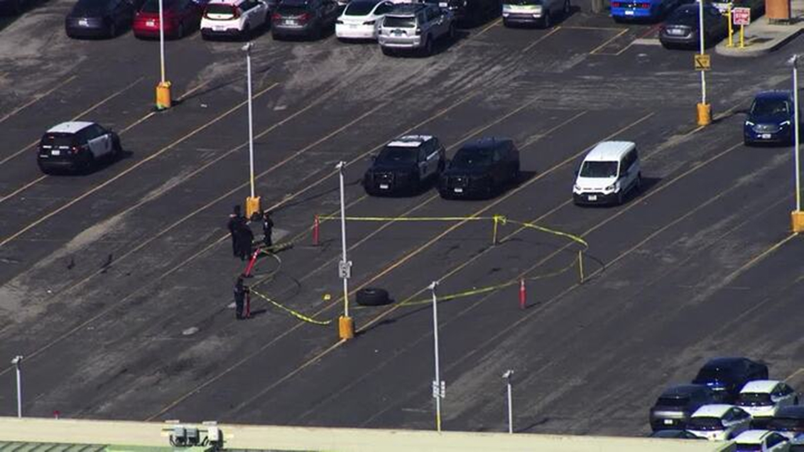

USA: Koło odpadło przy starcie samolotu pasażerskiego

Samolot United Airlines, który wystartował z międzynarodowego lotniska w San Francisco (SFO), został skierowany do Los Angeles po tym jak od podwozia samolotu odpadło jedno z kół. Koło zniszczyło kilka pojazdów zaparkowanych na lotnisku, a nikt nie został ranny.
„Lot United Airlines nr 35 stracił jedną oponę po starcie z San Francisco. Samolot wyląduje na lotnisku LAX. Po wylądowaniu w Los Angeles zorganizujemy nowy samolot, który będzie mógł kontynuować tę podróż dla naszych klientów” – powiedział rzecznik United Airlines.
Według władz lotniska Boeing 777-200 przewodzący na pokładzie 249 osób, w tym 235 klientów, 10 stewardów i czterech pilotów wystartował z międzynarodowego lotniska San Francisco o godzinie 11:35 czasu lokalnego i około 25 minut później został przekierowany do Los Angeles, gdzie bezpiecznie wylądował.